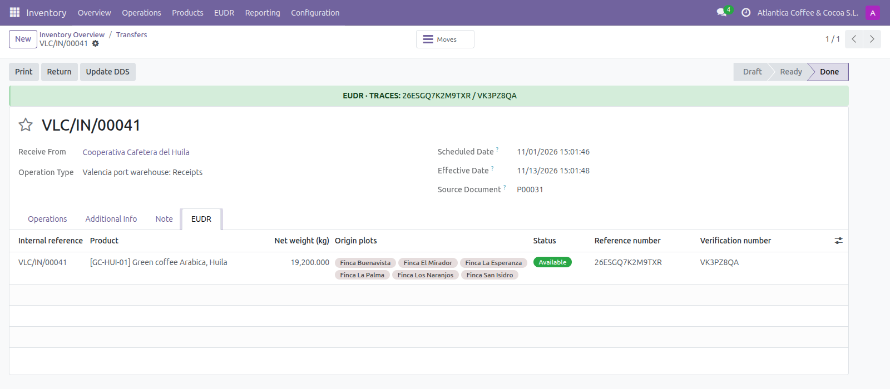
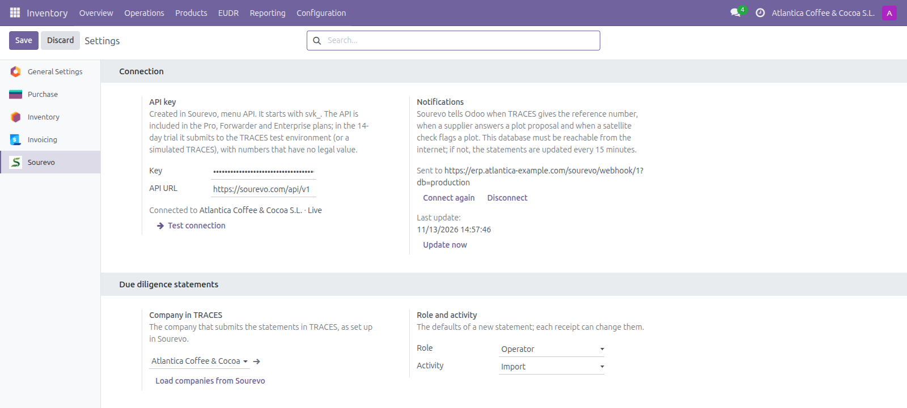
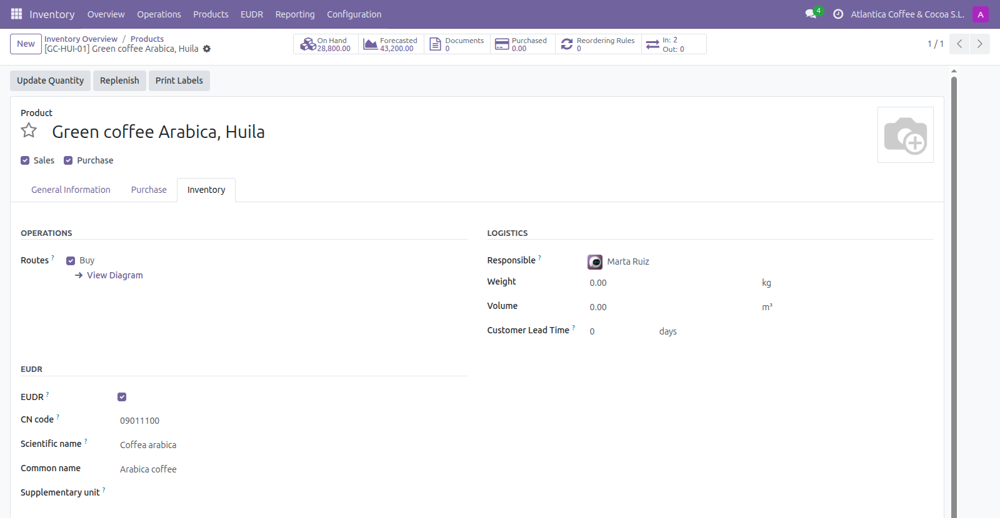
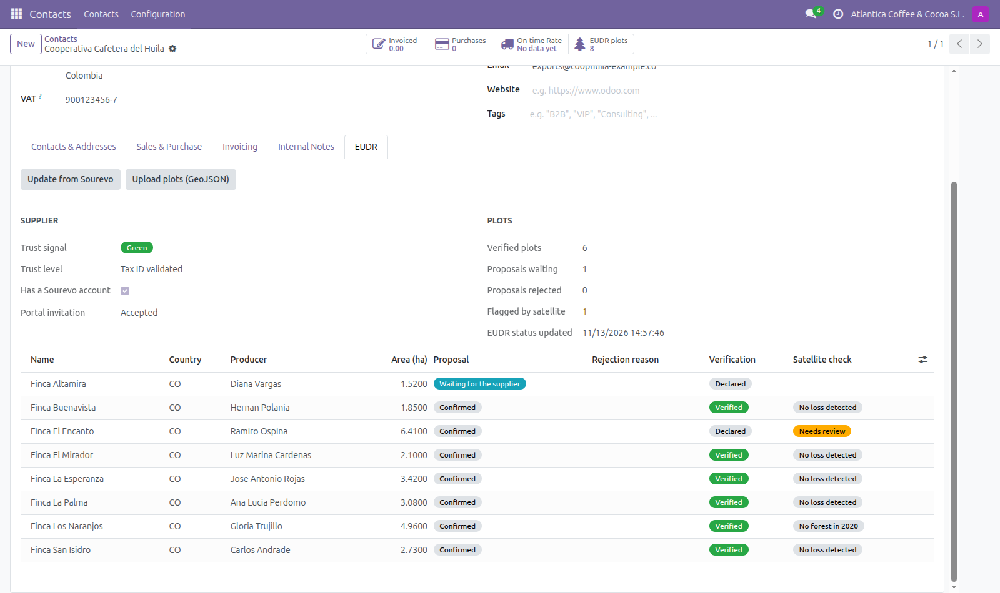
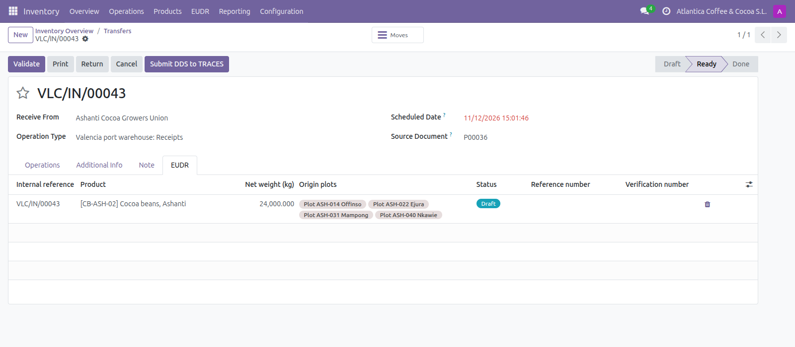
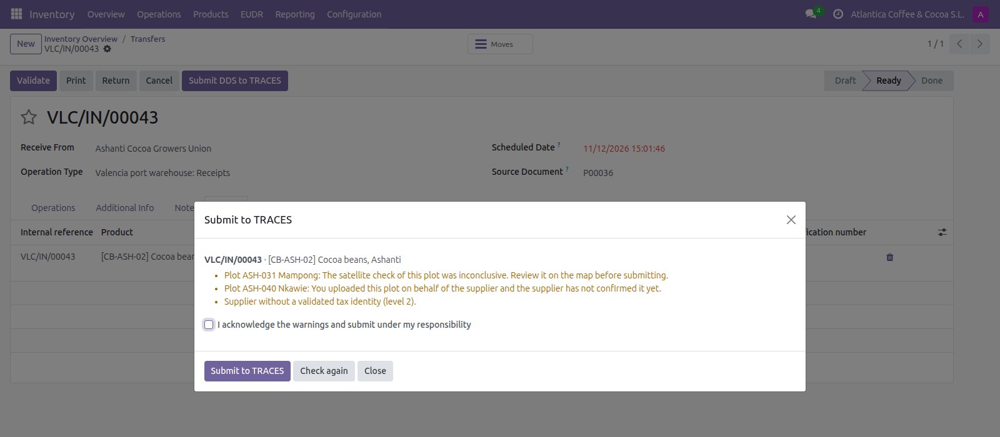
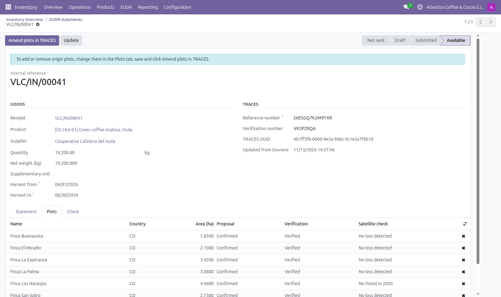

● by Fran<code>systems · EUDR COMPLIANCE FROM ODOO
Sourevo EUDR connects Odoo Inventory and Purchase with Sourevo, the EUDR compliance service that submits due diligence statements (DDS) to the EU TRACES system through its official API. Prepare the statement from the receipt, review the warnings, submit, and get the TRACES reference number back on the receipt, ready for customs.
✓ Odoo 17 · 18 · 19 · 20✓ Community and Enterprise✓ Free module✓ Regulation (EU) 2023/1115

The problem
Coffee, cocoa, wood, rubber, soy, palm oil and cattle, and the products made from them, need a due diligence statement in TRACES before they are placed on the EU market or exported: the product, the quantity, the geolocation of every plot of land and the risk assessment.
The data is in Odoo, TRACES is not
Supplier, product, CN code and net weight are already in the purchase and the receipt. Typing them into TRACES for every shipment is slow and error prone.
Plots arrive by email
The geolocation of each plot comes in spreadsheets and GeoJSON files that nobody checks against deforestation data until customs asks.
The number gets lost
Customs and your customers ask for the reference and verification numbers. They belong on the receipt, not in somebody’s inbox.
Features
Connected in two minutes
EUDR products
Suppliers and their plots
From the receipt to TRACES
Kept in sync
Safe by design
Step by step
Real screens of the module in Odoo 18, with demo data.
01
Connect your Sourevo account
Settings > Sourevo: the API key, the connection test, webhooks and the company that submits in TRACES, with its role and default activity.

02
Mark your EUDR products
An EUDR flag and the CN code in the Inventory tab. For wood, pulp and paper, the scientific and common name that TRACES asks for.

03
Suppliers, their plots and the satellite check
The EUDR tab of the supplier: trust level, portal invitation and every plot with its proposal, verification and satellite verdict, kept up to date from Sourevo.

04
Prepare the statement from the receipt
Prepare DDS creates one statement per EUDR product with its net weight and the supplier’s usable plots. Submit DDS to TRACES sends it to Sourevo and runs the pre-submission check.

05
Review the warnings, then submit
Blocking issues stop the submission; warnings (an inconclusive satellite check, a plot the supplier has not confirmed yet) are listed so you can acknowledge them under your responsibility.

06
The TRACES reference, back in Odoo
When TRACES accepts the statement, its reference and verification numbers appear on the receipt (as at the top of this page), in the list of transfers and on the printed receipt. Each statement keeps its goods, plots, check and status; an available one can have its plots amended in TRACES from here.

Behind the module
The module is the Odoo side. Sourevo is the service that does the EUDR work, hosted in the EU.
Direct TRACES API submission
Sourevo submits, amends and withdraws due diligence statements through the official TRACES API (version 4, required since Regulation (EU) 2025/2650), tested end to end in EUDR Acceptance, the official TRACES test environment.
Satellite checks of every plot
Each plot is checked against the JRC 2020 forest map and Global Forest Watch tree cover loss and alerts, with Copernicus Sentinel-2 images from 2020 and from today to review a flag.
A portal for your suppliers
Producers and exporters upload their plots for free, as GeoJSON or a GPS point, in 12 languages, and confirm or correct what you upload for them. Every value keeps who provided it and when.
Authorised representatives
Freight forwarders and customs agents submit for several companies as their authorised representative, each company with its own records and statements.
Checks that explain themselves
Clear blocking issues and warnings before submitting: plot geometry, the 4 ha rule, supplier identity, legality documents and country risk under Regulation (EU) 2025/1093.
A 5-year record
The due diligence record of each statement, kept for the five years the regulation requires, with its history of changes in TRACES.
Requirements
| A Sourevo account | The module is free; it connects to your Sourevo account. Create one at sourevo.com. |
| A plan with the API | The API is included from the Pro plan (also Forwarder and Enterprise). Packs do not include it. See the plans. |
| Free 14-day trial | The API works during the trial in test mode: statements go to the TRACES test environment (or a simulated TRACES) and their numbers have no legal value. |
| Your TRACES access | To submit for real, your company registered in TRACES with Web Services Access; you store its credentials once in Sourevo, encrypted. |
| Odoo | Odoo 17, 18, 19 or 20, Community or Enterprise, on Odoo.sh or your own server, with Inventory, Purchase and Contacts. Odoo Online cannot install modules with Python code. |
| Languages | The module is in English, Spanish, French, Portuguese, German, Italian, Dutch and Polish. |
Setup
Create your Sourevo account
Start the 14-day free trial at sourevo.com and create an API key in the API menu. It starts with svk_.
Connect Odoo
Install the module, open Settings > Sourevo, paste the key, click Test connection and Connect notifications.
Submit from a receipt
Mark your EUDR products with their CN code, then on the receipt click Prepare DDS and Submit DDS to TRACES.
FAQ
→ Which data leaves my Odoo?
Nothing until you enter your own API key. Then only what you send to Sourevo: the supplier (name, country, tax ID, address, email and phone), the product (description and CN code), the plots you upload and, for each receipt, its net weight and plots. Sourevo sends back the status of each statement and its TRACES numbers. Remove the key to stop it.
→ Does Sourevo replace my own TRACES account?
No. You submit as your company (or as the authorised representative of your customer), with your own TRACES Web Services credentials stored in Sourevo. The statements are yours and you see them in TRACES.
→ A receipt has several EUDR products. One statement or several?
One per product: in Sourevo a batch has a single product. They are prepared, checked and submitted together from the receipt.
→ My Odoo is not reachable from the internet. Does it still work?
Yes. Webhooks need a public address; without one, a scheduled action asks Sourevo every 15 minutes for the statements waiting for TRACES, and Update now in Settings does it at once.
→ What if a product has no weight?
The module never invents it: when the unit is not a weight and the product has no weight, it asks for the net weight in kg before sending anything.
→ Is there an API for other ERPs?
Yes, the same Sourevo REST API the module uses, with OpenAPI, idempotency and signed webhooks. Developer documentation.
Support
We build and maintain the module ourselves, next to Sourevo and its TRACES connection. Write to us before you start, or when something does not fit the way you work.
Before you start
Tell us how you import and we will tell you honestly whether submitting from Odoo fits.
Help to set it up
API key, notifications and your first statement, by email. If you get stuck, we look at it with you.
Kept up to date
Odoo 17, 18, 19 and 20, and every change of the TRACES API.
Write to us → Start the free trial API documentation
juan.canton@sourevo.com · sourevo.com/en